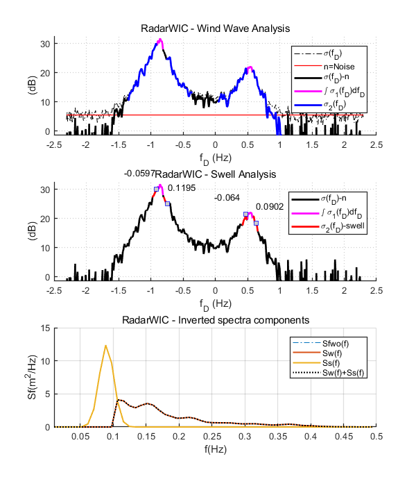
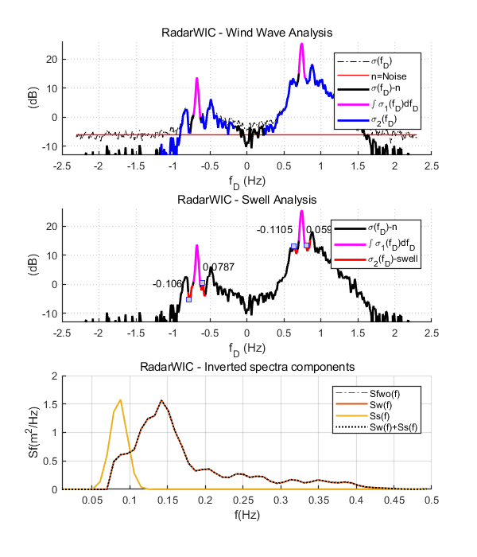

Example script on how to use the RadarWIC code to invert the HF Radar signal
It uses data from station N4 and O2 as described in Alattabi et al.,
2019 to reproduce Figures x and y in the paper.
Contents
Use data from site N4 (see Alattabui et al., 2019)
clear
basedir = 'data/N4/';
fdir = dir(basedir);
for i = 3:length(fdir)
clear f PXY
fn = fdir(i).name;
if strcmp(fn(1:3),'dop')
disp(fn)
load([basedir fn])
freq = f;
clear f
masterRadarWIC
save([basedir fn(5) '_inv.mat'],'f','thw','Sfh');
eval(['aX2' fn(5) ' = f;'])
eval(['aY2' fn(5) ' = Sfh;'])
insitu = load([basedir 'insitu_' fn(5) '.mat']);
eval(['aX1' fn(5) ' = insitu.f;'])
eval(['aY1' fn(5) ' = insitu.Sf;'])
end
end
figure('InvertHardcopy','off','Color',[1 1 1],'OuterPosition',[593.8 -9.4 542.4 864]);
subplot_spec4x2(aX1A,aY1A,aX2A,aY2A,1); title('N4')
subplot_spec4x2(aX1B,aY1B,aX2B,aY2B,2);
subplot_spec4x2(aX1C,aY1C,aX2C,aY2C,3);
subplot_spec4x2(aX1D,aY1D,aX2D,aY2D,4);
subplot_spec4x2(aX1E,aY1E,aX2E,aY2E,5);
subplot_spec4x2(aX1F,aY1F,aX2F,aY2F,6);
subplot_spec4x2(aX1G,aY1G,aX2G,aY2G,7);
subplot_spec4x2(aX1H,aY1H,aX2H,aY2H,8);
legend('in-situ','inverted');
dop_A.mat
Ratio = 0.68108
Wave Inversion model RadarWIC as described in Alattabi et al (2019)
Calibration factors: aw=0.25 as=0.05
Swell broadening sigma =0.011Swell/Wind fc(Hz)=0.12
Hs fp fm theta_p theta_m
Wind : 4.18 0.07 0.17 89.4 78.0
Swell : 0.00 NaN NaN
Hybrid: 4.18 0.07 0.17 89.4 78.0
dop_B.mat
Ratio = 0.21484
Wave Inversion model RadarWIC as described in Alattabi et al (2019)
Calibration factors: aw=0.25 as=0.05
Swell broadening sigma =0.011Swell/Wind fc(Hz)=0.12
Hs fp fm theta_p theta_m
Wind : 2.56 0.11 0.18 82.0 96.5
Swell : 0.00 NaN NaN
Hybrid: 2.56 0.11 0.18 82.0 96.5
dop_C.mat
Ratio = 0.1592
Wave Inversion model RadarWIC as described in Alattabi et al (2019)
Calibration factors: aw=0.25 as=0.05
Swell broadening sigma =0.011Swell/Wind fc(Hz)=0.12
Hs fp fm theta_p theta_m
Wind : 1.25 0.13 0.19 89.0 67.2
Swell : 0.00 NaN NaN
Hybrid: 1.25 0.13 0.19 89.0 67.2
dop_D.mat
Ratio = 0.33303
Wave Inversion model RadarWIC as described in Alattabi et al (2019)
Calibration factors: aw=0.25 as=0.05
Swell broadening sigma =0.011Swell/Wind fc(Hz)=0.12
Hs fp fm theta_p theta_m
Wind : 1.34 0.11 0.18 87.2 104.4
Swell : 0.00 NaN NaN
Hybrid: 1.34 0.11 0.18 87.2 104.4
dop_E.mat
Ratio = 1.1568
Wave Inversion model RadarWIC as described in Alattabi et al (2019)
Calibration factors: aw=0.25 as=0.05
Swell broadening sigma =0.011Swell/Wind fc(Hz)=0.12
Hs fp fm theta_p theta_m
Wind : 1.88 0.09 0.14 31.9 72.6
Swell : 1.47 0.09 0.08
Hybrid: 2.08 0.09 0.13 31.6 66.9
dop_F.mat
Ratio = 0.48125
Wave Inversion model RadarWIC as described in Alattabi et al (2019)
Calibration factors: aw=0.25 as=0.05
Swell broadening sigma =0.011Swell/Wind fc(Hz)=0.12
Hs fp fm theta_p theta_m
Wind : 1.29 0.11 0.18 61.7 104.6
Swell : 0.00 NaN NaN
Hybrid: 1.29 0.11 0.18 61.7 104.6
dop_G.mat
Ratio = 0.36879
Wave Inversion model RadarWIC as described in Alattabi et al (2019)
Calibration factors: aw=0.25 as=0.05
Swell broadening sigma =0.011Swell/Wind fc(Hz)=0.12
Hs fp fm theta_p theta_m
Wind : 1.99 0.13 0.18 48.8 46.1
Swell : 0.00 NaN NaN
Hybrid: 1.99 0.13 0.18 48.8 46.1
dop_H.mat
Ratio = 0.40891
Wave Inversion model RadarWIC as described in Alattabi et al (2019)
Calibration factors: aw=0.25 as=0.05
Swell broadening sigma =0.011Swell/Wind fc(Hz)=0.12
Hs fp fm theta_p theta_m
Wind : 1.60 0.12 0.17 73.4 68.6
Swell : 0.00 NaN NaN
Hybrid: 1.60 0.12 0.17 73.4 68.6

Use data from site O2 (see Alattabi et al., 2019)
basedir = 'data/O2/';
fdir = dir(basedir);
for i = 3:length(fdir)
clear f PXY
fn = fdir(i).name;
if strcmp(fn(1:3),'dop')
disp(fn)
load([basedir fn])
freq = f;
clear f
masterRadarWIC
save([basedir fn(5) '_inv.mat'],'f','thw','Sfh');
eval(['X2' fn(5) ' = f;'])
eval(['Y2' fn(5) ' = Sfh;'])
insitu = load([basedir 'insitu_' fn(5) '.mat']);
eval(['X1' fn(5) ' = insitu.f;'])
eval(['Y1' fn(5) ' = insitu.Sf;'])
end
end
dop_A.mat
Ratio = 0.40034
Wave Inversion model RadarWIC as described in Alattabi et al (2019)
Calibration factors: aw=0.25 as=0.05
Swell broadening sigma =0.011Swell/Wind fc(Hz)=0.12
Hs fp fm theta_p theta_m
Wind : 4.85 0.16 0.20 72.3 67.0
Swell : 0.00 NaN NaN
Hybrid: 4.85 0.16 0.20 72.3 67.0
dop_B.mat
Ratio = 0.8774
Wave Inversion model RadarWIC as described in Alattabi et al (2019)
Calibration factors: aw=0.25 as=0.05
Swell broadening sigma =0.011Swell/Wind fc(Hz)=0.12
Hs fp fm theta_p theta_m
Wind : 4.00 0.08 0.15 44.1 56.0
Swell : 0.00 NaN NaN
Hybrid: 4.00 0.08 0.15 44.1 56.0
dop_C.mat
Ratio = 0.27516
Wave Inversion model RadarWIC as described in Alattabi et al (2019)
Calibration factors: aw=0.25 as=0.05
Swell broadening sigma =0.011Swell/Wind fc(Hz)=0.12
Hs fp fm theta_p theta_m
Wind : 1.52 0.14 0.18 58.6 64.5
Swell : 0.00 NaN NaN
Hybrid: 1.52 0.14 0.18 58.6 64.5
dop_D.mat
Ratio = 0.51556
Wave Inversion model RadarWIC as described in Alattabi et al (2019)
Calibration factors: aw=0.25 as=0.05
Swell broadening sigma =0.011Swell/Wind fc(Hz)=0.12
Hs fp fm theta_p theta_m
Wind : 1.90 0.14 0.17 132.9 122.1
Swell : 0.00 NaN NaN
Hybrid: 1.90 0.14 0.17 132.9 122.1
dop_E.mat
Ratio = 1.6118
Wave Inversion model RadarWIC as described in Alattabi et al (2019)
Calibration factors: aw=0.25 as=0.05
Swell broadening sigma =0.011Swell/Wind fc(Hz)=0.12
Hs fp fm theta_p theta_m
Wind : 2.35 0.09 0.13 35.0 54.8
Swell : 1.87 0.09 0.09
Hybrid: 2.50 0.09 0.13 35.2 53.1
dop_F.mat
Ratio = 0.75414
Wave Inversion model RadarWIC as described in Alattabi et al (2019)
Calibration factors: aw=0.25 as=0.05
Swell broadening sigma =0.011Swell/Wind fc(Hz)=0.12
Hs fp fm theta_p theta_m
Wind : 2.10 0.10 0.16 107.0 113.8
Swell : 0.00 NaN NaN
Hybrid: 2.10 0.10 0.16 107.0 113.8
dop_G.mat
Ratio = 0.34289
Wave Inversion model RadarWIC as described in Alattabi et al (2019)
Calibration factors: aw=0.25 as=0.05
Swell broadening sigma =0.011Swell/Wind fc(Hz)=0.12
Hs fp fm theta_p theta_m
Wind : 1.58 0.13 0.19 40.8 47.8
Swell : 0.00 NaN NaN
Hybrid: 1.58 0.13 0.19 40.8 47.8
dop_H.mat
Ratio = 0.48763
Wave Inversion model RadarWIC as described in Alattabi et al (2019)
Calibration factors: aw=0.25 as=0.05
Swell broadening sigma =0.011Swell/Wind fc(Hz)=0.12
Hs fp fm theta_p theta_m
Wind : 1.49 0.12 0.16 62.8 67.1
Swell : 0.00 NaN NaN
Hybrid: 1.49 0.12 0.16 62.8 67.1

plot O2
figure('InvertHardcopy','off','Color',[1 1 1],'OuterPosition',[593.8 -9.4 542.4 864]);
subplot_spec4x2(X1A,Y1A,X2A,Y2A,1); title('O2')
subplot_spec4x2(X1B,Y1B,X2B,Y2B,2);
subplot_spec4x2(X1C,Y1C,X2C,Y2C,3);
subplot_spec4x2(X1D,Y1D,X2D,Y2D,4);
subplot_spec4x2(X1E,Y1E,X2E,Y2E,5);
subplot_spec4x2(X1F,Y1F,X2F,Y2F,6);
subplot_spec4x2(X1G,Y1G,X2G,Y2G,7);
subplot_spec4x2(X1H,Y1H,X2H,Y2H,8);
legend('in-situ','inverted');
plot N4 and O2
figure('InvertHardcopy','off','Color',[1 1 1],'OuterPosition',[593.8 -9.4 542.4 864]);
subplot_spec4x2ab(aX1A,aY1A,aX2A,aY2A,X1A,Y1A,X2A,Y2A,1);
subplot_spec4x2ab(aX1B,aY1B,aX2B,aY2B,X1B,Y1B,X2B,Y2B,2);
subplot_spec4x2ab(aX1C,aY1C,aX2C,aY2C,X1C,Y1C,X2C,Y2C,3);
subplot_spec4x2ab(aX1D,aY1D,aX2D,aY2D,X1D,Y1D,X2D,Y2D,4);
subplot_spec4x2ab(aX1E,aY1E,aX2E,aY2E,X1E,Y1E,X2E,Y2E,5);
subplot_spec4x2ab(aX1F,aY1F,aX2F,aY2F,X1F,Y1F,X2F,Y2F,6);
subplot_spec4x2ab(aX1G,aY1G,aX2G,aY2G,X1G,Y1G,X2G,Y2G,7);
subplot_spec4x2ab(aX1H,aY1H,aX2H,aY2H,X1H,Y1H,X2H,Y2H,8);
legend('N4 in-situ',' N4 inverted', 'O2 in-situ',' O2 inverted');